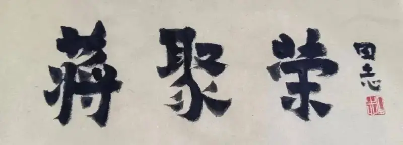
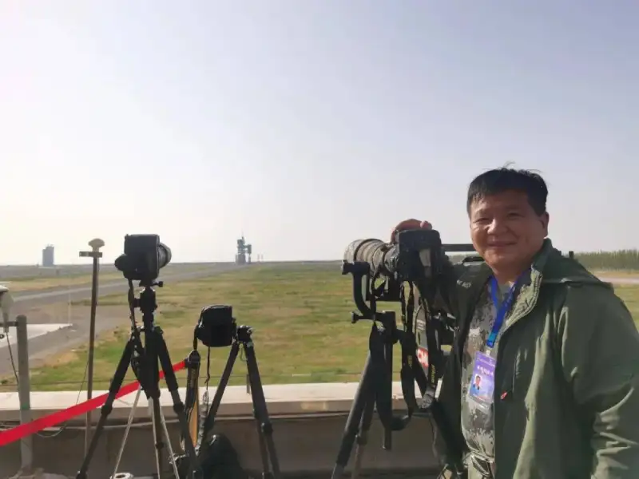
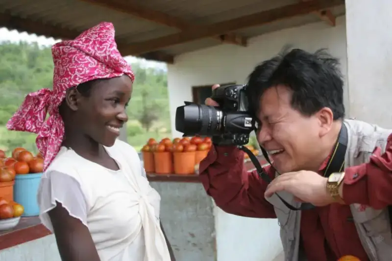
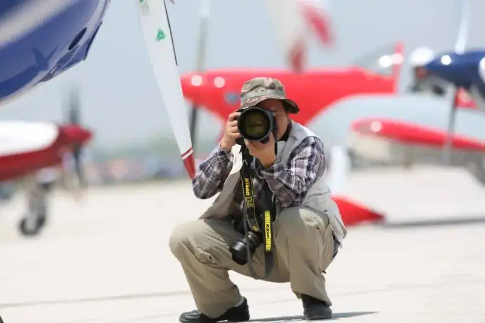
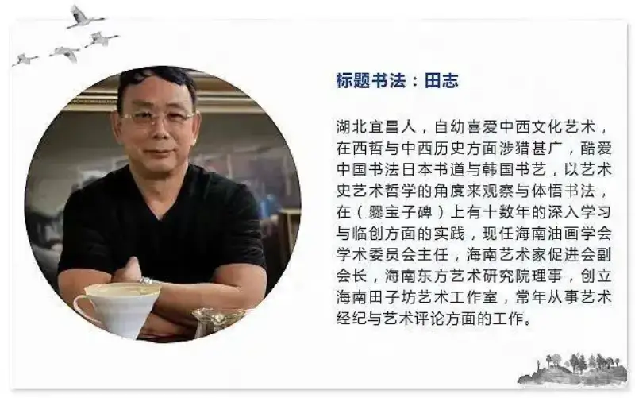

Published: 2023-07-21
Source link: https://www.cnphotos.net/academy/show-146.html

The other day, Jiang Jurong sent me a photo of dragon boat racing. It ran on the front page of China Photonews, a full page, with the picture even under the masthead. It was a tight shot, and it had grand force.
I have known Jiang Jurong for more than thirty years, not days. When I first joined the army, I often saw his photos in papers such as People’s Daily, PLA Daily, and China Sports Daily, and I admired him. We were in different units. He was in a survey unit, and his photos mostly showed survey work and life. Perhaps that is when he learned to cross mountains and measure the land on foot, and grew used to sleeping rough under the stars. It also began a bond with photography he could never undo. He also loved sports photography, and his shots hit hard.
Later he moved to the Hainan Military Region, while I was still at a frontline unit. Once, at a large exercise, I saw a lieutenant colonel walking around with a camera. I guessed it was him, and so it was. After that we had contact.

For a long time he shot for the Hainan Military Region, and the unit issued rich gear: a Nikon F4 body and a range of fast short, mid, and long lenses. At the time that gear outclassed many pros. I also photographed at the front. When I moved to the region headquarters, every time I saw his long and short lenses I coveted them, and wondered again and again when they would be on my shoulder. Around the year 2000, he left to be a political commissar at a local arms office, and fortune favored me. I took his post, and that dreamed-of gear was finally mine. Even now, I still feel the rush.
But I underestimated his obsession. Every so often he would call to borrow a camera. I had just taken his place, and out of face I could not refuse. One day he had taken the big gear off to shoot something, and a senior officer’s event called me in. I had to turn up with a small DSLR. The general who ran the political department saw me and scolded me. After that, I found reasons whenever he wanted to borrow again.
Much later, the whole army held a photo contest, and the regional commander put the task on me: prepare works, or go down to the units and shoot. I was unsure, so I asked Jiang Jurong to come. He would never refuse such a good job. The next day we took a private car to the units.
That time we shot for at least ten days at the units, by day and by night. One night we shot scouts crawling through hoops of fire in night training. He shot, and I shot from the same spot. When the prints came back, even I was stunned. At a unit in Qionghai, on a huge parade ground, officers and men formed a circle and performed a dragon dance in the middle. To get the whole view, we borrowed a lift truck used for streetlights. We stood in its cage, raised tens of meters in the air, and shot with a fisheye lens. The cage swayed and it was scary. I said that if we fell it would be over. He did not answer that. He only said, stand firm and hold on. Then he leaned out of the cage to shoot. That day we almost risked our lives to get a view that today only a drone can take. I forget how the contest turned out, but many photos ran in military and civilian papers. Most of all, I secretly learned from him, and my skills leapt ahead. I came to see that photography is not sightseeing or a casual pass through. It is an art, and even more a way to express. This laid a firm base for the army-wide photo trips I later joined, and for being chosen to go to Beijing and study under the master photographer General Jiang Zhishun.

Later we left the army about the same time and returned to civilian life. Though we lived in one city, we did not meet often. But I knew that, beyond work, his great love was still photography. One cold winter we traveled together. We first went to Taiyuan, stayed a few days, then went to Hohhot. We could have flown. He would not. He took the road with a few others. They set off first. We flew and arrived before them. When they arrived and we met, he told me he had shot many good photos along the way, and loved it. Then I understood why he chose the tiring road.
Time passed. After the army and then civilian work, Jiang Jurong reached the end of his working life and retired. No more office, no more endless meetings. As if leaving winter for bright spring, he shouldered his camera and began his photographic journey.
He shoots air shows, rocket launches, sports, and dragon boat races: landscape, people, customs, and folk life, across the country. The distance he travels, the range of subjects, the depth of effort, and the beauty of his photos are beyond ordinary reach. His work has won more than four hundred awards, including a bronze at the National Photographic Art Exhibition. Not to exaggerate, setting aside titles, in photographic achievement he truly stands at the top of the pyramid. In recent years at Wenchang, crowds of people go to watch and shoot rocket launches, but few shoot work that pros respect and professional media rush to take.
Every photographer knows that a good image is not easy to take. It takes solid craft, effort beyond what most can imagine, waiting, chance, and a little luck. Jiang Jurong has clearly put in that effort. I look carefully at almost every photo he posts and sends to the media. Professionally, his work is, to me, truly excellent and refined, shot on merit. It comes from deep love, tireless work, and a lifelong pursuit held like a faith. Take rocket launches. His shots are nearly all snapped up by major media. What people do not know is that, to get a shot he likes, he reaches the base days, even a week, early, and scouts the launch site again and again for the best spot. To get a different frame each time, he readies four cameras. For one or two minutes of shooting, he prepares and waits for days. At launch, he runs four cameras at once, from different angles, with different focal lengths and settings, to leave a grand record of every launch.
One day this year I called him and could not get through. I messaged him, and after a long while he called back, the signal breaking up. He was in Xinjiang, shooting herders moving their livestock, where there was no phone signal. Before we finished, the call dropped. To disappear at any time is normal for him.

Some say it is easy to be a picture-taker but hard to be a photographer. Unless you have put deep work in, and been beaten down by shooting, you do not grasp its true meaning. The depth of Jiang Jurong’s work and the number of his awards are beyond count. He loves photography almost not for fame or gain, but for the love itself. Photography is like breathing, already in his blood and his life.
I have met many stubborn people who achieved greatly in a field through that stubbornness. They seem to have come into the world with a mission. All their lives they are caught up in the everyday and must earn a living, yet inside them a lamp stays lit.For Jiang Jurong and photography, it has long been like fish and water, a steed and the grassland, an ideal and the distance. In a world of light and shadow he keeps on, across a thousand mountains, gaining and losing. That spirit and those deeds are a craftsman’s, and they command respect, and ask to be copied, learned, and followed.
In photography I have long looked on Jiang Jurong as a teacher, but he once had a weak point: a thin base in writing. There is a saying that a good title is half the article, and the same is true of photos. Back at the region, when he shot a strong image and had to write a caption, he sometimes asked me how. I wanted to tell him to build up this side, but he was already a soldier when I was five, so I did not dare. Later he slowly made up for it. In recent years, he has tried many shooting methods, and his major subjects now aim for a unity of art, innovation, and thought. After each campaign, he almost always writes out the whole process: the camera and lens, the aperture, shutter, and ISO of each frame, and his own feelings. He posts this on different platforms for others to use and learn. He has become a volunteer coach, and many who follow him have improved a lot.
When, in a short life, we take some good thing worth pursuing as a lifelong love, that is a great fortune. No one, not even Jiang Jurong, can count how far he has walked, how hard it has been, or how tired he has become for photography. His effort has bought not only fine pictures but a full, rich life. A lifetime is short, no more than a breath between breaths. In that limited time, if we walk the road we want, love the people we want, and do the work we want, we have lived with width and depth.
One photo often holds hundreds of thousands of bits of information. Beyond skill, it shows the photographer’s love of life and sense of it. When we stand in the colorful real world, a single passion is a person’s practice. When we give up much and hold fast, the lotus in the heart blooms without a sound. In that sense, Jiang Jurong’s lifelong love has made a hard, rare, and unmatched practice. In one instant he leaves a record for the ages. With his lens he leaves traces for history, and leaves himself as well.
Written in Haikou, July 2023

About the author:
Li Chuanhua was born in the 1970s. He served for years in the army and now lives in Haikou. He is a member of the Hainan Writers Association. His books include Silent Questions, People on the Road, Lanlan’s Diary, Beyond Your Care, Record of the Liberation of Hainan, and Learning to Bloom Like a Peony. Record of the Liberation of Hainan has been revised and reissued several times. He has won the second Hainan Government Book Award and the Hainan ethnic-minority Seven-One reportage prize.